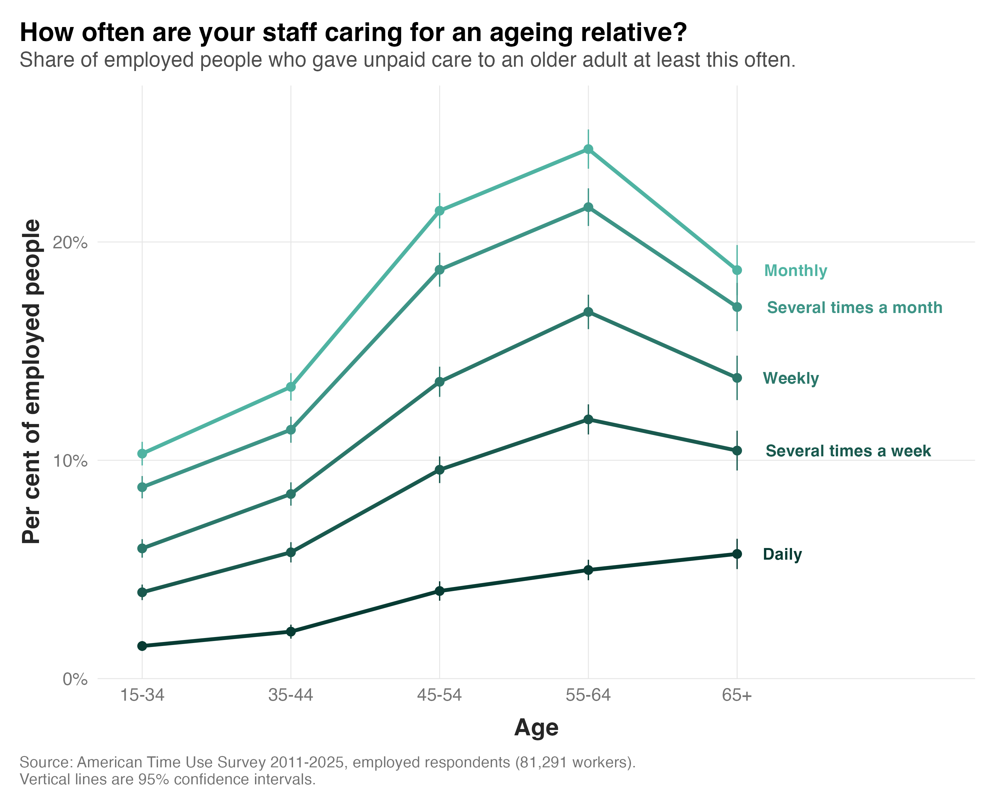

Populations are ageing, and governments across many countries are trying to help older people stay in their own homes for longer, an approach known as "ageing in place". Australia's new Support at Home program, launched in November 2025, is one example. But staying at home often means more of the day-to-day help falls to family members, many of whom have jobs.
So how many employees have these caring responsibilities?
To find out, I used the American Time Use Survey, which since 2011 has asked every respondent whether they gave unpaid care or help to an older adult in the past three to four months. I looked at 81,291 employed people between 2011 and 2025.

Here's what I found:
1) About one in six employees cares for an older adult at least monthly (16.0 per cent). For about one in ten, it happens at least weekly.
2) Care peaks late in people's careers. Among employees aged 55 to 64, about one in four give care at least monthly, one in six at least weekly, and one in 20 every day. These are often the most senior and experienced people in a workforce.
3) Women are more likely to be carers at every age, but men still make up about a third of employed carers. Among employees aged 55 to 64, 20 per cent of women and 14 per cent of men give care at least weekly.
4) It takes time. Carers spend about two and a half hours providing it on the days they give care. Almost a quarter of these employees also have children under 18 at home.
Workplace support for caring has mostly been built around children, through parental leave and return-to-work programs. Eldercare is harder to plan for, because it is less predictable and can last for years. Some governments have responded. Australia and the UK give employees with caring responsibilities a legal right to request flexible working arrangements, and in 2024 the UK introduced a week of unpaid carer's leave. But a right to ask only helps if people know it applies to them, and many employees helping an ageing parent may not think of themselves as carers. So a first step for organisations is to make sure employees know these rights cover eldercare, and to build a culture where people feel comfortable using them.